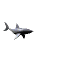

SHARKS
Shark of the Day: Searching the depths...
Thinking of a shark...
Greenland Shark
The Greenland shark (Somniosus microcephalus) is a massive, slow-moving shark inhabiting the cold waters of the North Atlantic and Arctic Oceans. It is the longest-living vertebrate known, with individuals estimated to live for centuries (some possibly over 400 years) due to its extremely slow metabolism and growth rate of about 1 cm per year. Reaching lengths up to 6.4 meters and weights of over 1,000 kg, it is one of the largest shark species and the biggest fish in the Arctic!
This deep-sea dweller typically lives at depths down to 1,200 meters, though it can descend beyond 2,000 meters. It thrives in frigid temperatures between −0.6°C and 12°C, often migrating vertically with the seasons, venturing into shallower waters during winter and retreating to deeper zones in warmer months. Despite its slow swimming speed of around 1.2 km/h, it is an effective predator, most likely ambushing prey such as fish, seals, and seabirds, possibly targeting sleeping seals. It also scavenges on carrion, including whales, reindeer, and even polar bears.
Greenland sharks are ovoviviparous, giving birth to live young, with litters of up to 10 pups measuring around 40 cm at birth. They are thought to reach sexual maturity at around 150 years old, though little is known about their reproductive behavior, and no definitive mating or nursery areas have been confirmed. A single gravid female has ever been documented in the wild.
Many Greenland sharks host a 30 mm (1.2 in) long pinkish-white parasitic copepod (Ommatokoita elongata) on their eyes, which often causes blindness but appears to have little impact on their survival in the dark depths they inhabit. Impressive!
Greenland sharks rely on high concentrations of trimethylamine N-oxide (TMAO) in their tissues to survive extreme deep-sea conditions. TMAO counteracts the protein-destabilizing effects of urea, which sharks retain for osmoregulation, protects against the damaging impact of high hydrostatic pressure at depth, and helps maintain proper cellular function in freezing temperatures. By stabilizing proteins and enzymes, it allows Greenland sharks to thrive in cold, high-pressure environments where other vertebrates could not survive.
They face few natural predators, though rare cases of sperm whales feeding on them have been recorded. Historically hunted for their liver oil, they are now mostly caught as bycatch. Their flesh contains high levels of urea and TMAO, making it toxic unless fermented or dried—such as in the Icelandic dish hákarl.
Expanding on the preparation for consumption, here are the usual steps (traditional):
The shark meat is first cleaned and prepared, and then buried close to the sea to allow salty water to flood over it for several weeks (6-12 depending on the season), or in boreal forests to suck out the toxins. Afterward, the meat is dried for several months or even years, resulting in a significant loss of weight (around 30% during fermentation and 60% during drying, leaving only about 8% of the original meat). The modern method uses a large plastic container with drain holes to press out the fluids instead of burying it. The resulting fermented shark dish is often served in small pieces after removing the brown crust that develops during the drying process. The process breaks down the urea into ammonia and reduces the toxicity.
The modern method skips burial and instead uses large plastic containers with drain holes to press the meat. The final product has a strong ammonia smell, often compared to cleaning products or rotten cheese, and an acquired taste described as fishy, briny, and cheesy. It is traditionally served with a shot of brennivín, an Icelandic spirit, during the midwinter festival Þorrablót.
They're my favorite shark and so precious!!
Pacific Sleeper Shark
The Pacific sleeper shark (Somniosus pacificus) is a large, deep-sea shark species belonging to the family Somniosidae. It inhabits the Pacific Ocean, ranging from the Arctic to tropical waters, including regions near Alaska, Japan, the Solomon Islands, and the Tonga Trench.
Despite its name, it is not sluggish but an active, opportunistic predator and scavenger!
This species typically reaches lengths of around 4.4 meters, though unconfirmed reports and deep-sea photographs suggest some individuals may grow up to 7 meters, potentially making it one of the largest predatory fish in the world. Newborns measure about 40 to 42 centimeters. Average weight is 318–889 kg (700–1,958 lbs).
It has a heavy, cylindrical body with a flabby, dark brown or grayish appearance and small, rounded fins. The snout is short and rounded, and the skin feels rough due to tooth-like scales called dermal denticles. It lacks an anal fin and has two dorsal fins of similar size, with the first positioned closer to the pelvic fins than the pectoral fins. The tail is asymmetrical, featuring a well-developed lower lobe.
Pacific sleeper sharks inhabit depths from the surface down to at least 2,000 meters, often near the seafloor but capable of moving throughout the water column.
They are opportunistic feeders, with juveniles consuming fish, squid, and octopus, while larger sharks may prey on fast-swimming species like salmon and even marine mammals such as seals and dolphins. Evidence also shows they scavenge on carrion, including whale remains.
Little is known about their reproduction and lifespan. They are ovoviviparous, meaning embryos develop inside eggs retained in the mother’s body, but the number of pups and gestation period remain uncertain. No mature individuals have been definitively identified in Alaskan waters, where most caught specimens are juveniles, raising concerns about the impact of commercial fisheries. Due to their soft vertebrae, traditional aging methods fail, making population and longevity studies difficult.
Pacific sleeper sharks are often caught as bycatch in longline and trawl fisheries. While not currently protected, they are listed as Near Threatened by the IUCN due to overfishing pressures and knowledge gaps in their biology.
They're so cute!!
Goblin Shark
The goblin shark (Mitsukurina owstoni) is a rare, deep-sea predator found in the Atlantic, Pacific, and Indian Oceans, typically at depths of 800 to 3,000 feet. It is the only living species in the family Mitsukurinidae, a lineage dating back 125 million years. Its most striking feature is its long, flattened snout, which houses a high concentration of electroreceptors called ampullae of Lorenzini, organs that detect the faint electrical fields produced by prey such as fish, squid, and crustaceans in the pitch-black deep sea.
The goblin shark’s most remarkable adaptation is its protrusible jaw. When prey is detected, its entire jaw can shoot forward at a maximum velocity of 3.14 meters per second (about 10.3 feet per second), with the lower jaw moving nearly twice as fast as the upper jaw due to its upward and forward motion. The entire jaw extension occurs in roughly 0.3 seconds, reaching up to 9.4% of the shark’s body length, far exceeding the 1–2% seen in other sharks. This makes it the fastest recorded jaw protrusion of any fish. This slingshot-like mechanism, powered by elastic ligaments, allows it to capture agile prey despite its slow, sluggish swimming. Rows of long, needle-like teeth grip soft-bodied animals, while rear teeth are adapted for crushing.
Its body is flabby and pinkish due to semi-translucent skin that reveals underlying blood vessels. It lacks a swim bladder but maintains neutral buoyancy through low-density liver oils, conserving energy in the food-scarce deep ocean. Though poorly understood, goblin sharks are thought to grow slowly and live up to 60 years. Most specimens are caught as bycatch, and no pregnant female has ever been studied.
The goblin shark poses no threat to humans. The IUCN lists it as Least Concern due to its wide distribution and stable population, though deep-sea fishing pressures remain a concern.
Positively fascinating!

Cookiecutter Shark
The cookiecutter shark (Isistius brasiliensis), also known as the cigar shark, is a small but remarkable deep-sea predator found in warm oceanic waters worldwide. Despite reaching only 42–56 cm (16.5–22 in) in length, this shark has earned its name through a unique feeding behavior .
The cookiecutter shark has an elongated, cigar-shaped body with a short, rounded snout and large, forward-facing green eyes. Its most striking features are its specialized teeth: small, narrow upper teeth that act as anchors, and large, knife-like lower teeth that interlock to form a single saw-like cutting edge.The shark is chocolate brown with a distinctive dark "collar" around its throat and gill region, while its underside is covered in light-producing photophores that emit a vivid green glow.
The cookiecutter shark is famous for gouging round, cookie-shaped plugs of flesh from much larger prey. The photophores on its belly create counter-illumination that helps it blend with downwelling light, while the dark collar may mimic the silhouette of a small fish, acting as a lure. When a larger animal approaches, the shark attaches itself using suctorial lips and a specialized pharynx, then uses its bandsaw-like lower teeth to excise a circular chunk of flesh, often aided by twisting its body.
Bite marks from cookiecutter sharks have been found on an astonishing variety of animals, including dolphins, whales, seals, great white sharks, basking sharks, tunas, and even submarines and undersea cables. Off the coast of Hawaii, nearly every adult spinner dolphin bears scars from this species!
This shark performs one of the most extreme vertical migrations in the ocean, traveling up to 3 km (1.9 mi) daily—spending the day at depths of 1–3.7 km and rising toward the surface at night. It's often found near islands and has been known to travel in schools, which may enhance the effectiveness of its lure.
While generally not considered dangerous due to its small size and offshore habitat, there have been documented attacks on humans, particularly long-distance swimmers in Hawaiian waters. Several swimmers crossing channels between Hawaiian islands have been bitten, suffering distinctive circular wounds. The shark has also caused practical problems. During the 1970s and 1980s, U.S. Navy submarines were damaged by cookiecutter shark bites to sonar domes and cables, initially mistaken for enemy weapons until the culprit was identified!
The species is currently listed as Least Concern by the IUCN, as it's widely distributed, has no commercial value, and isn't significantly threatened by fisheries.
So adorable!!
Frilled Shark
The frilled shark (Chlamydoselachus anguineus) is one of the most ancient and enigmatic shark species, often referred to as a "living fossil" due to its primitive features and unchanged appearance over millions of years. It inhabits deep waters in the Atlantic and Pacific Oceans, typically at depths of 100–1,200 meters (330–3,940 ft), though it's most commonly found between 300–1,000 meters.
This eel-like shark can grow up to 2.2 meters in length, with a slender, dark brown or gray body that helps it blend into the dimly lit depths. Its most distinctive feature is the presence of six pairs of gills, each separated by a narrow flap of skin, which gives the species its name. The shark has large, round eyes adapted to low-light conditions and a wide, expandable mouth lined with numerous rows of small, needle-like teeth arranged in a spiral pattern. This allows it to engulf prey in a single, powerful strike. Its swimming style is slow and undulating, resembling that of an eel, which helps it move stealthily through the water.
The frilled shark primarily feeds on squid, octopus, and other deep-sea fish, using ambush tactics to capture its prey. It reproduces through ovoviviparity, meaning the embryos develop inside eggs that remain within the mother’s body until they hatch, after which live young are born. Litters usually consist of 20 to 30 pups, with some reports suggesting up to 40. The gestation period is exceptionally long, estimated at around three years, making the species particularly vulnerable to population decline.
It rarely interacts with people and has no interest in human activity. It is occasionally caught as bycatch in deep-sea fishing operations, which poses a potential risk to its survival. The International Union for Conservation of Nature (IUCN) lists the frilled shark as vulnerable due to its slow reproductive rate and limited population numbers.
Their teeth are so satisfying to look at!
Velvet Belly Lanternshark
The velvet belly lanternshark (Etmopterus spinax) is a small, bioluminescent deep-sea shark found in the northeastern Atlantic Ocean and Mediterranean Sea. This fascinating species typically grows to about 45 cm (18 in) in length and inhabits depths ranging from 70 to 2,000 meters (230–6,560 ft), though it's most commonly found between 200–500 meters.
This shark has a slender, dark brown to black body with a distinctive velvety-black underside that gives it its common name. Like the cookiecutter shark, it possesses photophores (light-producing organs) on its belly and flanks that emit a blue-green glow. The shark has two dorsal fins, each preceded by a grooved spine, with the second dorsal fin being notably larger than the first.
The belly glow helps the shark blend with downwelling light when viewed from below, making it nearly invisible to predators. The light patterns might help individuals recognize each other, or lure small prey animals. Interestingly, the dark ventral patch that lacks photophores may create a silhouette that mimics a small fish, potentially attracting larger predators that the shark can then avoid or exploit.
This lanternshark feeds primarily on small bony fish, crustaceans (especially krill and shrimp), and cephalopods. It's a relatively slow swimmer that hunts in deep waters, often forming schools or aggregations.
The velvet belly is ovoviviparous, meaning females retain eggs inside their bodies until they hatch, giving birth to live young. Litters typically consist of 6–20 pups, each measuring about 12–14 cm at birth.
Currently listed as Least Concern by the IUCN, though it's occasionally caught as bycatch in deep-sea trawl fisheries. It has no commercial value and isn't targeted by fisheries, which helps protect its populations.
So cute with its big eyes!!
Chain Catshark
The chain catshark, also known as the chain dogfish, is a small shark species named for the distinctive chain-like patterns on its skin. It inhabits the western Atlantic Ocean, from Georges Bank in Massachusetts down to Nicaragua and Barbados, including the Gulf of Mexico and the Caribbean Sea. Typically found at depths between 36 and 750 meters, it prefers rocky, sandy, or muddy seafloor environments and is often seen resting near structures like boulders or shipwrecks during the day. Its activity increases at night when it hunts for food such as squid, small bony fish, crustaceans, and polychaete worms.
This shark has a slender body with a blunt snout and narrow, oval-shaped eyes that give it a cat-like appearance. One of its most remarkable traits is biofluorescence. Its skin contains compounds that cause it to glow bright green under blue or ultraviolet light. Scientists believe this may help with communication, camouflage, or identifying mates in the dimly lit deep-sea environment. The chain catshark is harmless to humans and is not targeted by commercial fisheries, though it may occasionally be caught as bycatch.
Reproduction in chain catsharks is oviparous, meaning they lay eggs. Females produce pairs of egg cases, commonly known as "mermaid’s purses," which have long, coiled tendrils that anchor them to vertical structures like coral or wreckage. These egg cases are transparent when first laid but harden and darken over time. Embryonic development lasts between 8 to 12 months, depending on water temperature. Notably, females can store sperm for extended periods (up to two years) allowing them to fertilize eggs long after mating. In captivity, they are known to lay eggs regularly, sometimes producing over 40 in a single breeding season.
Due to their small size, calm behavior, and striking appearance, chain catsharks are popular in public aquariums, where they are often bred and studied. Research on their reproductive biology and embryonic development provides valuable insights into shark evolution and deep-sea adaptation. Despite living in deep waters and being rarely seen by humans, they are classified as Least Concern by the IUCN, indicating a stable population across their range.
The chain pattern is so mesmerising!
Pyjama Shark
The pyjama shark is a small, bottom-dwelling species found exclusively in temperate coastal waters of South Africa, from the Atlantic to the Indian Ocean side. It inhabits kelp forests, rocky reefs, and caves, typically at depths up to 100 meters, though it can be found as deep as 282 meters. Named for its bold black longitudinal stripes on a pale body, it grows to about 1 meter and is often seen resting in crevices or among vegetation during the day, as it is primarily nocturnal.
This opportunistic predator feeds on a wide range of prey, including crustaceans, small fish like anchovies and hakes, cephalopods such as octopus and squid (including the chokka squid during spawning events) and even the egg cases of other sharks. It uses a unique spinning "death roll" behavior to subdue and dismember prey, and when threatened, it curls into a circle with its tail covering its head for protection.
Pyjama sharks are oviparous, laying pairs of dark brown, rectangular egg cases (commonly known as "mermaid’s purses") year-round. These eggs are anchored to kelp or rocks by long, coiled tendrils and take around five to six months to hatch, depending on water temperature. Pups emerge at about 15 cm long and grow slowly, reaching maturity at approximately 0.8 meters.
Though not targeted commercially, they are frequently caught as bycatch in gillnets, longlines, and trawls, and are often killed by fishers who view them as pests. Despite this, their population is currently stable and classified as Least Concern by the IUCN, with evidence suggesting an increasing trend. They are protected from commercial exploitation in South African waters and are popular in public aquariums due to their hardiness and striking appearance.
I love watching them swim!
Kitefin Shark
The kitefin shark (Dalatias licha) is a deep-sea predator found globally in temperate and tropical waters, inhabiting depths from 200 to 1,800 meters, primarily on continental slopes and seamounts. It has a slender, cigar-shaped body, large eyes, thick fringed lips, and a short, blunt snout. Its coloration is uniformly brown to blackish, with translucent fins and a black-tipped caudal fin.
This species is ovoviviparous, giving birth to 10–16 pups per litter after a gestation period estimated at around two years. Newborns measure 30–45 cm (12–18 inches), and the shark reaches maturity at approximately 2.5–5.2 feet (77–159 cm). Males mature slightly smaller than females.
First confirmed to be bioluminescent in 2020, the kitefin shark emits a blue-green light (455–486 nm) from specialized skin cells called photocytes, primarily on its ventral surface and dorsal fins. This glow is hormonally controlled by melatonin, unlike most bioluminescent organisms that use neural triggers. Scientists believe the light helps with camouflage by counter-illuminating its silhouette against faint surface light, avoiding detection by predators or prey.
As a slow-moving, solitary hunter, it uses its large, oil-filled liver for buoyancy, allowing it to hover efficiently above the seafloor. It feeds on a wide range of prey, including deepwater bony fish, smaller sharks, cephalopods, crustaceans, polychaete worms, and even scavenges on larger animals, sometimes taking bites from whales or other sharks.
Once heavily fished (especially off the Azores from the 1970s to 1990s) for its liver oil (rich in squalene), meat, and skin, the kitefin shark has a low reproductive rate, making it vulnerable to overfishing. Due to population declines, it is classified as Vulnerable (VU) by the IUCN. Most current captures are incidental bycatch, and post-release survival is low due to depth-related stress.
Bioluminescence is so cool!